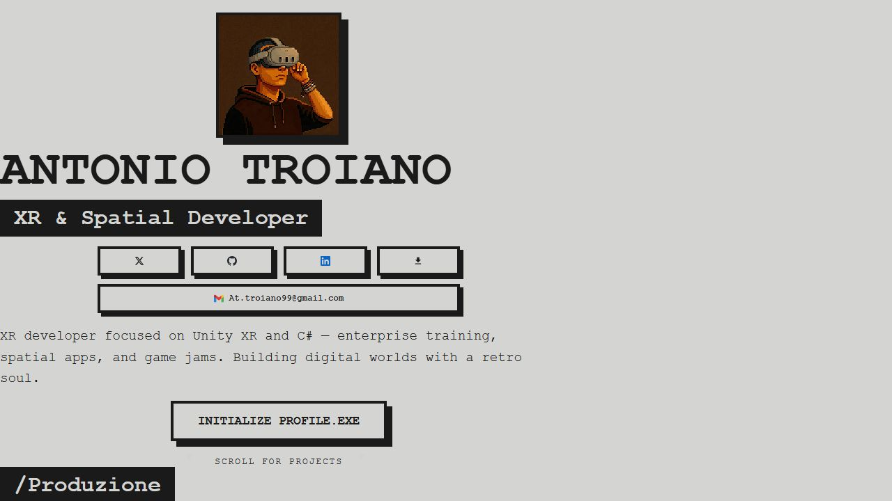
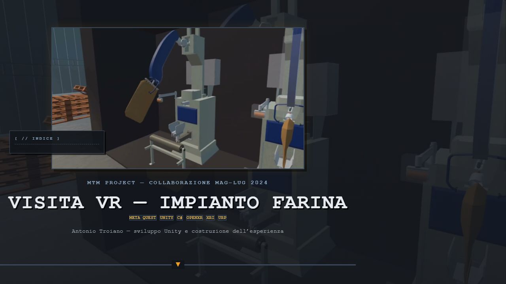

Esperimenti Locali — Progetto In Corso
Portfolio Showcase
/Introduzione
Portfolio statico in HTML, CSS e JavaScript vanilla, senza framework. L'ho progettato e sviluppato con un flusso di lavoro basato su agenti AI: io definisco architettura, requisiti e criteri di accettazione, l'agente implementa, io verifico e correggo.
/Tecnologie_Usate
HTML5
Struttura semantica delle pagine: hero, sezioni progetto e contenuti navigabili.
CSS modulare
Design tokens, layout responsive mobile-first e fogli di stile per pagina.
JavaScript vanilla
Effetti di scena, Web Audio API per i suoni 8-bit e micro-interazioni UI.
GitHub Pages
Hosting del sito statico: deploy diretto dal repository, senza build step.
Cursor / OpenCode
Strumenti AI per pianificare, implementare e iterare sul codice con revisione umana.
/Flow_Operativo
- Definizione dei requisiti (architettura, file coinvolti, criteri di accettazione).
- Piano generato dall'agente e revisionato prima di toccare il codice.
- Implementazione per piccoli step, con diff rivisto a ogni incremento.
- Test su desktop e Android, con correzioni fino al comportamento atteso.
PS C:\Dev\Projects\Web\CV> opencode
# l'agente parte dalla memoria del progetto e valuta la task
PS C:\Dev\Projects\Web\CV> read progetto_generale.md, stato_attuale.txt, registro_decisionale.md
# struttura mappata: index.html / style.css / script.js
PS C:\Dev\Projects\Web\CV> analizza le sezioni della pagina progetto
PS C:\Dev\Projects\Web\CV> implementa modifica proposta → applicata al codice sorgente
# verifica: reload nel browser, controlli incrociati su stile e interazioni
PS C:\Dev\Projects\Web\CV> verifica → stato: tutto ok
# ogni passo aggiorna lo stato: il registro tiene traccia delle decisioni prese
PS C:\Dev\Projects\Web\CV> commit "feat: scroll hint sotto la CTA"
// nessuna libreria, nessun build step: html statico pronto per qualsiasi hosting.
Rispetto a uno sviluppo tradizionale con lo stesso scope, la consegna del portfolio ha richiesto circa [X giorni].
/Note
Sul fronte dello stile la scelta è ricaduta su un look retrò ma piacevole agli occhi. Un bianco candido, per chi passa ore davanti a un editor, è un'eresia. Via la carta: posto a grigi caldi, nero quasi assoluto e un arancio da CRT acceso.
Il risultato è una palette che riprende l'estetica dei terminali senza sacrificare la leggibilità, con suffusioni di colore usate con parsimonia per guidare l'occhio tra le sezioni.
Il background XR spiega perché il metodo conta: senza anni di pratica sul front-end, affidarmi solo alla memoria a breve termine dell'agente non bastava. Documentazione su disco + verifica manuale nel browser sono diventati il mio controllo qualità su ogni incremento.
— Antonio Troiano
/Screenshot
Home del portfolio su viewport desktop e mobile.

Desktop

Mobile
/Frame
Output del ciclo di sviluppo: ogni frame è una fetta verificata in browser prima del commit.

Home · layer sticky e intro interattiva (sessione UX front page)

Pagina progetto · template case study replicato su più schede